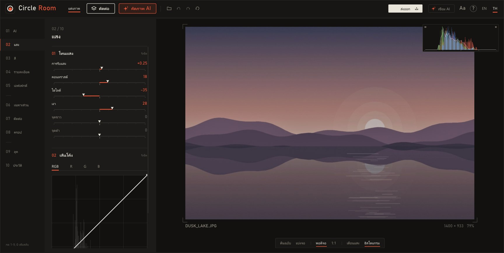
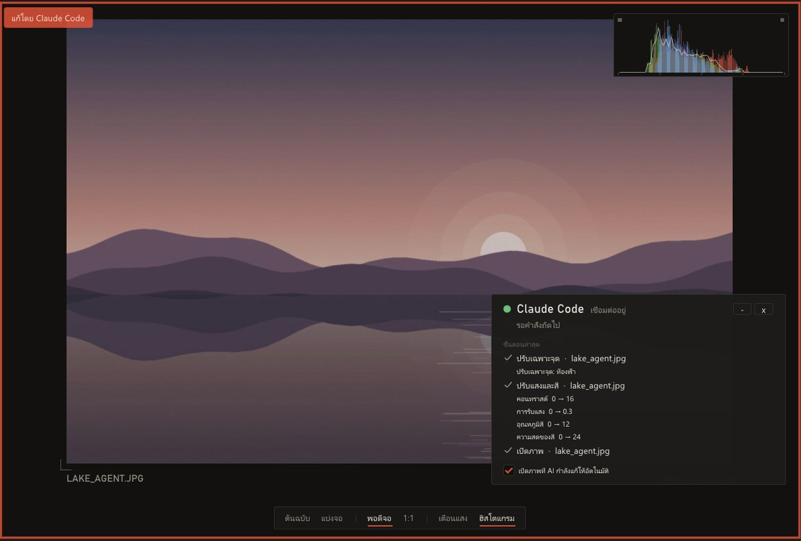

ห้องมืดล้างรูป อยู่ในเครื่องคุณYour darkroom, on your own PC.
โปรแกรมแต่งภาพฟรีสำหรับ Windows พร้อม AI ที่ทำงานในเครื่องA free Windows photo editor with AI that runs on your PC.
เวอร์ชันล่าสุดLatest v1.3.0, 15 Nov 2026 มีอะไรใหม่Release notes ซอร์สโค้ดบน GitHubSource on GitHub
ดูเหมือนคุณเปิดจากมือถือหรือ Mac ตอนนี้ Circle Room ใช้ได้บน Windows เท่านั้น ส่งลิงก์นี้ไปเปิดในคอมพิวเตอร์ Windows ได้เลย Looks like you’re on a phone or a Mac. Circle Room runs on Windows only for now; open this page on a Windows PC to download.

- 0 / 71ผลสแกน VirusTotalon VirusTotal
- รูปอยู่ในเครื่องStays on your PCAI ทำงานในเครื่องon-device AI
- โอเพนซอร์สOpen sourceตรวจโค้ดได้บน GitHubaudit it on GitHub
- ฟรี ไม่ต้องสมัครFree, no accountไม่มีโฆษณาno ads
- อัปเดตในโปรแกรมUpdates in-appตรวจ SHA-256 ทุกครั้งSHA-256 checked
ใหม่ในเวอร์ชัน 1.3.0New in 1.3.0
อัปเดตใหญ่ที่สุดตั้งแต่เปิดตัว ตั้งแต่เวอร์ชันนี้ไป โปรแกรมจะแจ้งเมื่อมีเวอร์ชันใหม่ และอัปเดตได้ในคลิกเดียว อ่านรายละเอียดทั้งหมดThe biggest update since launch. From this version on, the app tells you when a new one is out and updates in one click. Read the full release notes
-
แต่งอัตโนมัติหลายรูปพร้อมกันAuto edit many photos at once
เลือกรูป ทั้งโฟลเดอร์ หรือภาพที่ AI คัดไว้ แต่ละรูปได้การแต่งตามฉากของตัวเอง ข้ามรูปที่คุณแต่งไว้แล้ว และส่งออก JPEG ได้ ทำงานเบื้องหลังPick photos, a folder or your AI Cull picks. Each one gets an edit for its own scene, skips what you already edited, and can export JPEGs, all in the background.
-
ให้ AI แต่งรูปแทนคุณLet AI agents edit for you
Claude Code, Codex, Cursor, Gemini CLI และอีกกว่า 10 แอป สั่ง Circle Room ได้ด้วยภาษาปกติ ใช้ได้ 20 เครื่องมือ และเห็นภาพทุกขั้น ดูวิธีใช้Claude Code, Codex, Cursor, Gemini CLI and 10+ more can drive Circle Room in plain language, with 20 tools and a preview after every step. See how
-
ดูว่า AI กำลังทำอะไรWatch what the AI does
ระหว่างที่ AI ทำงาน โปรแกรมบอกว่าแอปไหนเชื่อมอยู่ ใช้เครื่องมืออะไร เปลี่ยนค่าอะไรบ้าง ภาพอัปเดตทันทีและย้อนกลับได้ทุกขั้นThe app shows which AI is connected, the tool it is using and every value it changed. The photo updates live and every step can be undone.
-
อัปเดตในตัวโปรแกรมIn-app updates
แจ้งเตือนเมื่อมีเวอร์ชันใหม่ ตรวจไฟล์ด้วย SHA-256 ก่อนติดตั้ง ถ้ามีปัญหาจะย้อนกลับเวอร์ชันเดิมให้ รูปและการตั้งค่าอยู่ครบGet notified of new versions. Downloads are checked against SHA-256 before installing and roll back on any problem. Your photos and settings stay put.
ลากดูความต่างDrag to compare.
ภาพขวาส่งออกจาก Circle Room จริง ไม่ได้แต่งด้วยโปรแกรมอื่น ใช้แค่หน้า แสง สี และเอฟเฟกต์ ค่าที่ใช้คือ:The right half was exported by Circle Room itself, nothing else touched it. Just the Light, Colour and Effects pages:
ทำอะไรได้บ้างWhat it does
แต่งแสงและสีบนการ์ดจอ ลากสไลเดอร์แล้วเห็นผลทันที AI คัดรูปเด็ดจากทั้งโฟลเดอร์ แต่งอัตโนมัติทีละหลายร้อยรูป ลบสิ่งที่ไม่ต้องการออกจากภาพ และให้ AI อย่าง Claude Code หรือ Codex แต่งรูปแทนคุณได้ ทุกอย่างประมวลผลในเครื่อง รูปไม่ถูกอัปโหลดไปไหน AI ทุกตัวทำงานในเครื่องLight and colour edits run on your graphics card, so every slider moves live. AI picks the keepers from a whole folder, auto-edits hundreds of photos at once, erases what you don’t want, and lets agents like Claude Code or Codex do the editing for you. Everything runs on your PC; your photos are never uploaded. Every AI model runs on-device.
คัดภาพ AIAI Cull
โยนทั้งโฟลเดอร์เข้าไป AI ให้คะแนนความคม แสง องค์ประกอบ จับภาพถ่ายรัวที่ซ้ำกันไว้เป็นกลุ่ม แล้วโชว์เฉพาะ 10, 50 หรือ 100 ใบที่ดีที่สุด เร็วราว 30 รูปต่อวินาที กดเอาใบที่ไม่ชอบออก แล้วบันทึกเฉพาะภาพสวยได้ในคลิกเดียว ค้นหาด้วยคำพูดก็ได้ เช่น “คนใส่แว่น” หรือ “ว่าวที่ชายหาด”Point it at a folder. AI scores sharpness, light and composition, groups burst shots, and shows only your best 10, 50 or 100, at about 30 photos a second. Drop the ones you dislike and save just the keepers. Search in plain words too, like “kite on the beach”.
แต่งอัตโนมัติ ทีละรูปหรือทั้งโฟลเดอร์Auto edit, one photo or a folder
ดูออกว่าเป็นภาพคน ทิวทัศน์ อาหาร หรือกลางคืน แล้วปรับให้เหมาะกับฉาก ทำทีละรูปหรือหลายร้อยรูปพร้อมกันในเบื้องหลัง ผลที่ได้เป็นค่าสไลเดอร์ธรรมดา แก้ต่อเองได้ทุกค่าTells a portrait from a landscape, food or a night shot and tunes for the scene, for one photo or hundreds in the background. The result is plain slider values you can keep editing.
ยางลบมหัศจรรย์ + ตัดต่อMagic eraser + compose
ระบายทับคนหรือของที่ไม่ต้องการ แล้ว AI เติมพื้นหลังให้เนียน วางภาพอื่นซ้อนได้ 4 เลเยอร์ AI ตัดพื้นหลังในคลิกเดียว ย้าย ย่อขยาย หมุน เลือกโหมดผสม และปรับสีให้กลืนกับภาพหลักPaint over a stranger or a stray wire and AI fills in the background. Stack up to four photos, cut them out in one click, move, resize, rotate, blend and colour-match.
ปรับเฉพาะส่วนAdjust one part
AI แยกใบหน้า คน ท้องฟ้า ถนน ต้นไม้ น้ำ ให้เอง คลิกเดียวแล้วปรับแสงเฉพาะท้องฟ้า หรือทำให้หน้าสว่างขึ้นโดยไม่กระทบเสื้อผ้าและพื้นหลังAI separates faces, people, sky, road, trees and water. One click to darken just the sky or brighten just the faces.
กู้ส่วนที่สว่างเกินRebuild blown highlights
ท้องฟ้าหรือหน้าที่ขาวจนไม่มีรายละเอียด ลดไฮไลต์ยังไงก็ได้แค่สีเทา ตัวนี้สร้างสีและพื้นผิวขึ้นมาใหม่ให้เข้ากับรอบข้างWhen a sky or a face clips to pure white, sliders only turn it grey. This rebuilds colour and texture that match the surroundings.
เชื่อมกับ AI (MCP)Works with AI agents (MCP)
Claude Code, Codex, Cursor และอีกหลายแอป ใช้ทุกเครื่องมือของโปรแกรมได้ และคุณเห็นทุกขั้นที่ AI ทำในหน้าจอ ดูเพิ่มClaude Code, Codex, Cursor and more can use every tool, and you see each step the AI takes on screen. More
เบาจริงActually light
ตัวโปรแกรมราว 4 MB เปิดภาพ 24 ล้านพิกเซลแล้วใช้ RAM ราว 20 MB ไม่ได้ใช้งานก็ไม่กิน CPU พรีวิวทุกเครื่องมือเปิดพร้อมกันใช้แค่ประมาณ 1 มิลลิวินาทีต่อเฟรมA program of about 4 MB. About 20 MB of RAM with a 24-megapixel photo open, zero CPU when idle, and about 1 ms per frame with every tool switched on.
ไม่ทับไฟล์ต้นฉบับYour originals stay untouched
ค่าที่แต่งเก็บเป็นไฟล์เล็กๆ ข้างรูป เปิดรูปเดิมเมื่อไหร่ก็แต่งต่อได้ ย้อนกลับได้ทุกขั้นในหน้า ประวัติEdits live in a tiny file beside the photo. Reopen any time and carry on, or step back through History.
ไทยและอังกฤษ พร้อมสอนใช้Thai and English, with a tour
สลับภาษาได้ในคลิกเดียว ครั้งแรกที่เปิดมีทัวร์สอนใช้ 12 ขั้น และปรับขนาดตัวอักษรได้ถึง 150%Switch language in one click. A 12-step tour runs the first time, and text scales up to 150%.
สั่งแต่งรูปด้วยภาษาปกติEdit photos by just asking.
Circle Room เป็น MCP server ในตัว แอป AI ที่รองรับ MCP ใช้เครื่องมือทุกอย่างของโปรแกรมได้ ตั้งแต่ปรับแสง ลบวัตถุ ไปจนถึงคัดและแต่งทั้งโฟลเดอร์ และได้เห็นภาพผลลัพธ์ทุกครั้งที่แก้ จึงตัดสินใจขั้นต่อไปจากภาพจริงCircle Room has a built-in MCP server. Any AI app that speaks MCP can use every tool, from light and colour to object removal and culling a whole folder, and sees the result after each step, so it decides the next move from the actual photo.
Claude CodeCodexCursorGemini CLIVS Code CopilotClaude DesktopAntigravityOpenCodeQwen CodeKimi CodeDeepSeek TUIWindsurfZ CodeMiMo Code
แต่งรูปนี้ให้ท้องฟ้าฟ้าขึ้น หน้าคนสว่างขึ้นนิดหน่อย แล้วครอปเป็น 4:5Make the sky bluer, brighten the faces a little, crop to 4:5
ลบคนที่เดินผ่านทางซ้ายออกRemove the person walking past on the left
เลือก 10 รูปที่ดีที่สุดในโฟลเดอร์นี้ แต่งทั้งหมด แล้วส่งออกเป็น JPEGPick the 10 best in this folder, edit them all, export JPEGs
- กดปุ่ม เชื่อม AI มุมขวาบนของโปรแกรมClick Connect AI at the top right of the app
- เลือกแอป AI ที่ใช้ แล้วกด คัดลอกPick your AI app and click Copy
- วางในแอป AI ครั้งเดียว แล้วสั่งได้เลยPaste it into the AI app once, then just ask

การแต่งเกิดในเครื่องคุณทั้งหมด สิ่งที่ส่งออกไปมีแค่ภาพตัวอย่างขนาดเล็กให้แอป AI ที่คุณเลือกใช้All editing happens on your PC. The only thing that leaves is a small preview sent to the AI app you chose to use.
ติดตั้ง 3 ขั้น ไม่ถึงนาทีThree steps. Under a minute.
ถ้าเจอหน้าจอสีฟ้า ไม่ต้องตกใจ กด 2 ครั้งก็ผ่านA blue screen? Don’t panic. Two clicks and you’re through.
Windows จะเตือนโปรแกรมใหม่ที่ยังไม่มีลายเซ็นดิจิทัลแบบเสียเงิน ไม่ได้แปลว่ามีไวรัส ซอร์สโค้ดทั้งหมดเปิดให้ตรวจได้บน GitHubWindows flags new apps that don’t carry a paid code-signing certificate. It doesn’t mean malware, and every line of source is open on GitHub.
กด More info แล้วกด Run anyway ครั้งต่อไปจะไม่ถามอีกClick More info, then Run anyway. It won’t ask again.
- 1
กดปุ่มดาวน์โหลดClick download
ไฟล์ .zip จะไปอยู่ในโฟลเดอร์ Downloads ไม่ต้องสมัครหรือล็อกอินอะไรA .zip lands in your Downloads folder. No sign-up, no account.
- 2
คลิกขวา แล้วเลือก “Extract All”Right-click, “Extract All”
สำคัญ: ต้องแตกไฟล์ก่อน ถ้าเปิดจากใน zip ตรงๆ ระบบ AI จะหาไฟล์โมเดลไม่เจอImportant: unzip first. Run it from inside the zip and the AI tools can’t find their models.
- 3
ดับเบิลคลิก CircleRoom.exeDouble-click CircleRoom.exe
ครั้งแรกจะมีทัวร์สั้นๆ สอนการใช้งาน ข้ามได้ และเปิดดูใหม่ได้ด้วยปุ่ม ? หรือ F1A short tour runs the first time. Skip it, or replay it later with ? or F1.
ไม่มีแอนตี้ไวรัสตัวไหนแจ้งว่าอันตรายNo antivirus engine flagged it
เราส่ง CircleRoom.exe เวอร์ชัน 1.3.0 ให้ VirusTotal สแกนด้วยแอนตี้ไวรัส 71 ตัว ผลคือพบ 0 (สแกนวันที่ 15 พ.ย. 2026) We sent CircleRoom.exe 1.3.0 to VirusTotal, which ran it past 71 antivirus engines: 0 flagged it (scanned 15 Nov 2026).
ดูรายงานบน VirusTotalOpen the VirusTotal reportอย่าเชื่อเราอย่างเดียว ตรวจเองได้ใน 1 นาทีDon’t just take our word for it
เช็คว่าไฟล์ที่โหลดมาเป็นไฟล์เดียวกับที่สแกนCheck your file is the one we scanned
แตกไฟล์ zip แล้วคลิกขวาในโฟลเดอร์ เลือก “Open in Terminal” แล้ววางคำสั่งนี้ ตัวเลขที่ได้ต้องตรงกับ SHA-256 ด้านล่างทุกตัว Unzip, right-click inside the folder, choose “Open in Terminal” and paste this. The result must match the SHA-256 below exactly.
PowerShellGet-FileHash .\CircleRoom.exeCircleRoom.exe84533589153d3ba2085ca5720e5839ba84dd409efc9fd8e0d117f08a937b7942สแกนเองอีกรอบScan it yourself
อัปโหลด CircleRoom.exe ที่คุณโหลดมาเองที่ virustotal.com ผลอาจต่างจากของเราเล็กน้อยเพราะฐานข้อมูลแอนตี้ไวรัสอัปเดตทุกวัน ถ้ามีตัวเดียวสองตัวแจ้งแบบ “Generic” หรือ “ML” มักเป็นการเดาจากโปรแกรมที่ไม่มีลายเซ็นดิจิทัล Upload the CircleRoom.exe you downloaded at virustotal.com. Results can drift as engines update daily; a lone “Generic” or “ML” hit is usually a guess about unsigned software.
เช็คไฟล์ zip ก่อนแตกก็ได้Or check the zip before unzipping
ใช้คำสั่งเดียวกันกับไฟล์ zip ในโฟลเดอร์ Downloads เช่น
Get-FileHash .\CircleRoom_Portable.zipSame command on the zip in Downloads, e.g.Get-FileHash .\CircleRoom_Portable.zipPortable.zip584563b6e7b48e6d738e062ae62e7cf484dc24047fb9b66e95d8bdef9892c7baLite.zipb8cfe02ba922e329c8aacfd9c298b515ac713b54b600e3d797971e9928b8aea8
โหลดจากเว็บนี้หรือ GitHub ของเรา เท่านั้น ถ้าได้ไฟล์มาจากที่อื่นและตัวเลขไม่ตรง อย่าเปิดไฟล์นั้น Only download from this page or our GitHub. If a copy from anywhere else doesn’t match these numbers, don’t run it.
เครื่องที่ใช้ได้Will it run?
| ระบบSystem | Windows 10 / 11 (64-bit) |
|---|---|
| การ์ดจอGraphics | รองรับ OpenGL 3.3 (การ์ดจอเกือบทุกรุ่นตั้งแต่ปี 2010 รวมการ์ดจอในตัว)OpenGL 3.3 (almost anything since 2010, integrated GPUs included) |
| RAM | ว่าง 1 GB ตอนใช้ AI1 GB free while AI runs |
| พื้นที่Disk | ตัวเต็ม ~500 MB, รุ่นเล็ก 4 MBFull ~500 MB, Lite 4 MB |
| ไฟล์ภาพFormats | JPEG, PNG, TIFF, BMP |
| ภาษาLanguages | ไทย, English |
| เชื่อม AIAI agents | แอปที่รองรับ MCP (Claude Code, Codex, Cursor ฯลฯ)Any MCP client (Claude Code, Codex, Cursor…) |
ถามก่อนโหลดBefore you download
ตัวเต็มกับรุ่นเล็กต่างกันยังไงFull or Lite?
รุ่นเล็ก (1.7 MB) มีเครื่องมือแต่งภาพครบทุกตัว แต่ไม่มี AI ส่วนตัวเต็ม (377 MB) มีโมเดล AI ทั้งหมด ถ้าไม่แน่ใจให้โหลดตัวเต็มLite (1.7 MB) has every editing tool but no AI. Full (377 MB) adds all the AI models. Not sure? Get Full.
ปลอดภัยไหม ทำไมมีคำเตือนIs it safe? Why the warning?
คำเตือนขึ้นเพราะโปรแกรมยังไม่มีใบรับรอง code signing แบบเสียเงิน ซอร์สโค้ดเปิดให้ทุกคนตรวจบน GitHub ผลสแกน VirusTotal เป็น 0/71 และโปรแกรมต่ออินเทอร์เน็ตแค่ตอนถาม GitHub ว่ามีเวอร์ชันใหม่ไหม (วันละไม่เกินครั้ง ปิดได้) รูปของคุณไม่ถูกส่งไปไหน ดูวิธีตรวจเองได้ที่ ส่วนตรวจความปลอดภัยThe warning appears because there’s no paid code-signing certificate yet. All source is on GitHub and VirusTotal reports 0/71. The app only goes online to ask GitHub whether there is a new version (at most once a day, and you can turn it off); your photos are never sent anywhere. See how to check it yourself.
ต้องติดตั้งอะไรเพิ่มไหมDo I need to install anything else?
ไม่ต้อง ทุกอย่างอยู่ในโฟลเดอร์เดียว จะย้ายไปไว้ที่ไหนหรือใส่แฟลชไดรฟ์ก็ได้ อย่าวางไว้ใน C:\Program Files เพราะโปรแกรมต้องเซฟการตั้งค่าข้างตัวเองNo. It’s one self-contained folder; move it anywhere, even a USB stick. Just avoid C:\Program Files, since settings are saved next to the app.
อัปเดตยังไงHow do I update?
ตั้งแต่ 1.3.0 เมื่อมีเวอร์ชันใหม่ จะมีปุ่มสีส้ม “อัปเดต” มุมขวาบน กดแล้วโปรแกรมดาวน์โหลด ตรวจ SHA-256 และติดตั้งให้เอง ถ้าใช้ 1.2.1 หรือเก่ากว่า ให้โหลด 1.3.0 จากหน้านี้หนึ่งครั้ง แล้วแตกไฟล์ทับโฟลเดอร์เดิมได้เลย การตั้งค่าและสไตล์ยังอยู่From 1.3.0 on, an orange “Update” button appears at the top right when a new version is out; it downloads, checks SHA-256 and installs for you. On 1.2.1 or older, download 1.3.0 here once and unzip it over the old folder; your settings and styles are kept.
ต่อกับ AI ตัวไหนได้บ้างWhich AI apps can connect?
แอปที่รองรับ MCP เช่น Claude Code, Codex, Cursor, Gemini CLI, VS Code Copilot, Claude Desktop, Antigravity, OpenCode, Qwen Code, Kimi Code, DeepSeek TUI, Windsurf, Z Code และ MiMo Code กดปุ่ม “เชื่อม AI” ในโปรแกรมเพื่อคัดลอกการตั้งค่า ดูวิธีใช้Apps that speak MCP, such as Claude Code, Codex, Cursor, Gemini CLI, VS Code Copilot, Claude Desktop, Antigravity, OpenCode, Qwen Code, Kimi Code, DeepSeek TUI, Windsurf, Z Code and MiMo Code. Click “Connect AI” in the app to copy the setup. How it works
ใช้บน Mac หรือมือถือได้ไหมMac or phone?
ตอนนี้ยังไม่ได้ ใช้ได้เฉพาะ WindowsNot yet. Windows only for now.
เสียเงินไหมDoes it cost anything?
ฟรี ไลบรารีและโมเดล AI ทุกตัวในโปรแกรมใช้สัญญาแบบเปิด (MIT / Apache-2.0 และอื่นๆ) ดูข้อความฉบับเต็มได้ในโฟลเดอร์ LICENSES ที่มากับไฟล์ดาวน์โหลดFree. Every bundled library and AI model is under an open licence (MIT, Apache-2.0 and others); full texts ship in the LICENSES folder of the download.